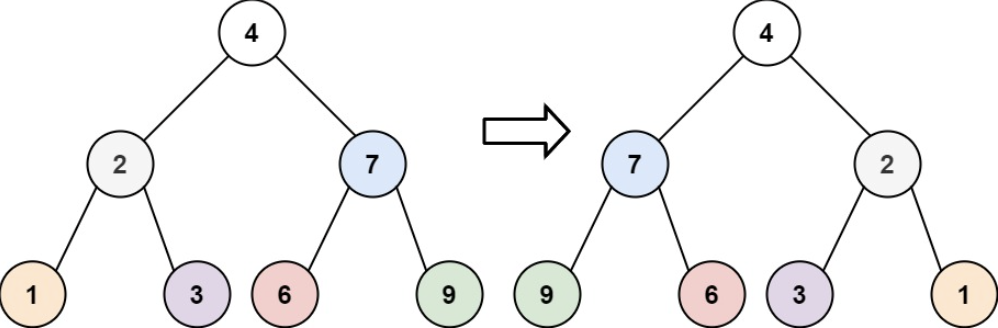
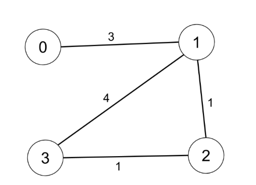

Midterm#
Short answer problems#
For each question below, fill in the blanks labeled (1), (2), (3), …, or briefly describe what is being asked.
Write all short-answer responses in a file named
answer.mdand include it in your submission.Each correctly answered blank (e.g., (1), (2)) is worth 2 points.
Q1. Complexity and Memory
Each integer occupies (1) bytes of memory. Therefore, if the total memory usage limit is 256 MB, the maximum size of N should be approximately between (2) and (3). Also, in Python, about (4) operations can be executed per second. If you are solving a problem where N = 10,000 and the time limit is 1 second, the maximum allowable algorithm time complexity is (5).
참고) When writing in a .md file, to express exponents such as \(2^3\), use the caret ^ symbol inside math mode, e.g., write $2^3$. Alternatively, you may write 2**3 for simplicity.
A1
A1.
(1) 4B
(2) \(10^7\)
(3) \(10^8\)
(4) 2 * \(10^7\)
(5) O(NlogN)
Q2. Graph Representation
A graph can be represented in two main ways: one method stores the edge weights between nodes i and j in a (1), and the other connects each node i to its neighbors [j, k, …] like a linked list, called the (2). The advantage of the adjacency list is that it uses less (3), but its disadvantage is that (4).
A2
A2.
(1) adjacency matrix
(2) adjacency list
(3) memory usage
(4) It takes longer to check if two nodes are directly connected.
Q3. Backtracking
Backtracking is a method of systematically finding possible solutions by following given conditions. Unlike (1), it prunes search paths early by skipping any candidate that does not meet specific conditions. In backtracking, (2) represents the number of elements visited so far, and (3) represents the number of different options available at each step. For example, when arranging all possible orders of 2 people selected from 5, the maximum (2) is (4), and the (3) is (5).
A3
A3.
(1) brute force
(2) depth
(3) branch
(4) 2
(5) 5
Q4. Dynamic programming
Dynamic Programming (DP) is a method of solving large problems by breaking them into smaller subproblems, where the solution to each small problem must remain valid when combined into the larger problem. By using (1), redundant calculations are avoided.
When designing a DP solution, you must define the three key components below:
state: (2)
what to store: (3)
transition: (4)
A4
A4.
(1) memoization (for top-down) / tabulation (for bottom-up)
(2) minimal set of parameters uniquely defining each overlapping subproblem
(3) the value (answer) computed for that state to reuse in larger problems/ the optimal value/result corresponding to the state
(4) recurrence relation expressing how a state depends on smaller subproblems
Q5. Two algorithms for solving shortest path problems learned this semester are (1) and (2). The first algorithm finds the shortest path from one node to all others, following a greedy approach—at each step, selecting the node with the smallest current path cost. For an advanced Python implementation, use (3) with a min-heap structure. The standard Python library that provides this functionality is (4).
A5
(1) Dijkstra
(2) Floyd Warshall
(3) priority queue
(4) heapq
Q6. (1) is a type of dynamic programming algorithm. It computes the minimum cost between all pairs of nodes. Implementation typically uses three nested loops. In the DP table, the cost from a node to itself (i → i) is initialized to (2), the cost between unconnected nodes is (3), and directly connected edges are initialized with their given weights. In the outermost loop (variable k), each node is considered as an intermediate node, and if a shorter path is found through k, the value is updated accordingly.
A6
(1) Floyd Warshall
(2) 0
(3) Infinity, float(‘inf’)
Q7. BFS vs. DFS
BFS stands for (1) and is implemented using a (2) data structure. In contrast, DFS stands for (3) and is typically implemented using (4) through function recursion. Since recursive calls in DFS follow a stack structure, functions are executed and then return in LIFO order. BFS is advantageous for finding the shortest path, while DFS explores deeper paths, making it useful for exploring deep structures in trees and graphs.
A7
(1) Breadth First Search
(2) queue (FIFO)
(3) Depth First Search
(4) stack (via recursion)
Q8. Complexity Ordering
Arrange the following time complexities in order from fastest to slowest:
O(\(N^2\))
O(NlogN)
O(\(2^n\))
O(N)
O(logN)
A8
(fastest) 5 -> 4 -> 2 -> 1 -> 3 (slowest)
Q9. Heap
In a min-heap, the smallest value is located at the root. The Python standard library used for heap implementation is (1). This library provides two core methods: (2) for inserting an element and (3) for retrieving the smallest-priority element. When inserting, if the parent node’s value is greater than the new item’s value, the new item “bubbles up” (sift-up) to maintain the heap property. When deleting, the last element of the heap is moved to the root position, and it is compared with its two child nodes; if the smaller child is less than the current value, they are swapped in a sift-down operation to restore the heap property.
A9
(1) heapq
(2) heappush
(3) heappop
Problem solving problems#
The following problems cover the material taught up to the midterm, and are all easy-level coding exercises.
Each problem includes 5 test cases. During grading, additional hidden test cases will be used, so you are encouraged to test your solutions with custom edge cases before submission.
Save each solution as p1.py, p2.py, p3.py, p4.py, or p5.py within your submission folder.
Use the provided starter code under the first toggle of each problem as your base implementation.
Problems p1–p4 are each worth 10 points, and p5 is worth 20 points.
p1 simulation
Robot Return to Origin
There is a robot starting at the position (0, 0), the origin, on a 2D plane. Given a sequence of its moves, judge if this robot ends up at (0, 0) after it completes its moves.
You are given a string moves that represents the move sequence of the robot where moves[i] represents its ith move. Valid moves are ‘R’ (right), ‘L’ (left), ‘U’ (up), and ‘D’ (down).
Return true if the robot returns to the origin after it finishes all of its moves, or false otherwise.
Note: The way that the robot is “facing” is irrelevant. ‘R’ will always make the robot move to the right once, ‘L’ will always make it move left, etc. Also, assume that the magnitude of the robot’s movement is the same for each move.
Example 1:
Input: moves = “UD” Output: true Explanation: The robot moves up once, and then down once. All moves have the same magnitude, so it ended up at the origin where it started. Therefore, we return true. Example 2:
Input: moves = “LL” Output: false Explanation: The robot moves left twice. It ends up two “moves” to the left of the origin. We return false because it is not at the origin at the end of its moves.
Constraints:
1 <= moves.length <= 2 * \(10^4\) moves only contains the characters ‘U’, ‘D’, ‘L’ and ‘R’.
class Solution:
def judgeCircle(self, moves: str) -> bool:
test case 1
input: ‘UD’
output: True
test case 2
input: ‘LL’
output: False
test case 3
input: ‘RULD’
output: True
test case 4
input: ‘RRRRLLLL’
output: True
test case 5
input: “UUDDLRLR”
output: True
p2 BFS/DFS
문제 Given the root of a binary tree, invert the tree, and return its root.
# Definition for a binary tree node.
# class TreeNode:
# def __init__(self, val=0, left=None, right=None):
# self.val = val
# self.left = left
# self.right = right
class Solution:
def invertTree(self, root: Optional[TreeNode]) -> Optional[TreeNode]:
test case 1

input: root = [4,2,7,1,3,6,9]
output: [4,7,2,9,6,3,1]
test case 2
input: root = [2,1,3]
output: [2,3,1]
test case 3
input: root = []
output: []
test case 4
input: [1,2,null,3,null]
output: [1,null,2,null,3]
test case 5
input: [1,2,3,4,5,null,6]
output: [1,3,2,6,null,5,4]
p3 Backtracking
문제 Given the root of a binary tree, return all root-to-leaf paths in any order.
A leaf is a node with no children.
# Definition for a binary tree node.
# class TreeNode:
# def __init__(self, val=0, left=None, right=None):
# self.val = val
# self.left = left
# self.right = right
class Solution:
def binaryTreePaths(self, root: Optional[TreeNode]) -> List[str]:
test case 1
input: root = [1,2,3,null,5]
output:[“1->2->5”,”1->3”]
test case 2
Input: root = [1]
Output: [“1”]
test case 3
input: [1,2,3,4,5,6]
output: [“1->2->4”,”1->2->5”,”1->3->6”]
test case 4
input: []
output: []
test case 5
input: [1,2,null,3,null,4,null]
output: [“1->2->3->4”]
p4 DP
문제 You are given an integer array cost where cost[i] is the cost of ith step on a staircase. Once you pay the cost, you can either climb one or two steps.
You can either start from the step with index 0, or the step with index 1.
Return the minimum cost to reach the top of the floor.
class Solution:
def minCostClimbingStairs(self, cost: List[int]) -> int:
test case 1
Input: cost = [10,15,20]
Output: 15
Explanation: You will start at index 1.
Pay 15 and climb two steps to reach the top. The total cost is 15.
test case 2
Input: cost = [1,100,1,1,1,100,1,1,100,1]
Output: 6
Explanation: You will start at index 0.
Pay 1 and climb two steps to reach index 2.
Pay 1 and climb two steps to reach index 4.
Pay 1 and climb two steps to reach index 6.
Pay 1 and climb one step to reach index 7.
Pay 1 and climb two steps to reach index 9.
Pay 1 and climb one step to reach the top. The total cost is 6.
test case 3
input: [0,0,0,0]
output: 0
test case 4
input: [5,4,3]
output: 4
test case 5
input: [1,2]
output: 1
p5 Shortest Path
문제 There are n cities numbered from 0 to n-1. Given the array edges where edges[i] = [fromi, toi, weighti] represents a bidirectional and weighted edge between cities fromi and toi, and given the integer distanceThreshold.
Return the city with the smallest number of cities that are reachable through some path and whose distance is at most distanceThreshold, If there are multiple such cities, return the city with the greatest number.
Notice that the distance of a path connecting cities i and j is equal to the sum of the edges’ weights along that path.
class Solution:
def findTheCity(self, n: int, edges: List[List[int]], distanceThreshold: int) -> int:
test case 1
Input: n = 4, edges = [[0,1,3],[1,2,1],[1,3,4],[2,3,1]], distanceThreshold = 4
Output: 3
 Explanation: The figure above describes the graph. The neighboring cities at a distanceThreshold = 4 for each city are: City 0 -> [City 1, City 2] City 1 -> [City 0, City 2, City 3] City 2 -> [City 0, City 1, City 3] City 3 -> [City 1, City 2] Cities 0 and 3 have 2 neighboring cities at a distanceThreshold = 4, but we have to return city 3 since it has the greatest number.
test case 2
Input: n = 5, edges = [[0,1,2],[0,4,8],[1,2,3],[1,4,2],[2,3,1],[3,4,1]], distanceThreshold = 2
Output: 0
 Explanation: The figure above describes the graph.
The neighboring cities at a distanceThreshold = 2 for each city are:
City 0 -> [City 1]
City 1 -> [City 0, City 4]
City 2 -> [City 3, City 4]
City 3 -> [City 2, City 4]
City 4 -> [City 1, City 2, City 3]
The city 0 has 1 neighboring city at a distanceThreshold = 2.
Explanation: The figure above describes the graph.
The neighboring cities at a distanceThreshold = 2 for each city are:
City 0 -> [City 1]
City 1 -> [City 0, City 4]
City 2 -> [City 3, City 4]
City 3 -> [City 2, City 4]
City 4 -> [City 1, City 2, City 3]
The city 0 has 1 neighboring city at a distanceThreshold = 2.
test case 3
input: n = 2, edges = [[0,1,5]], distanceThreshold = 4
output: 1
test case 4
input: n = 3, edges = [[0,1,1],[1,2,1],[0,2,1]], distanceThreshold = 2
output: 2
test case 5
input: n = 6, edges = [[0,1,1],[1,2,1],[2,3,1],[3,4,1],[4,5,1]], distanceThreshold = 2
output: 5